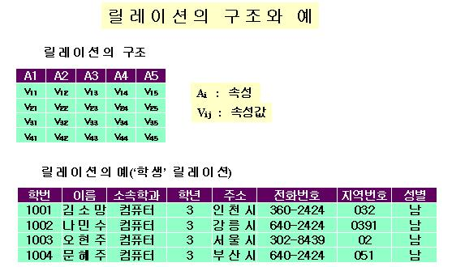
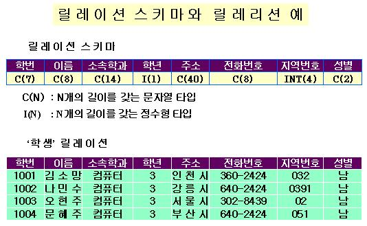
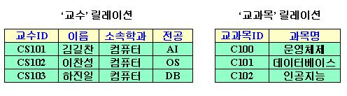
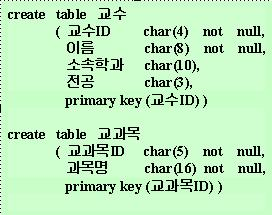
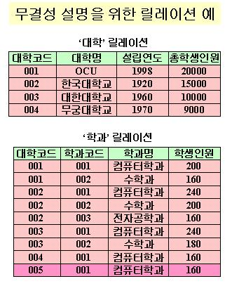

목 차
|
시작하기전에....제 3 회 "관계형 데이터베이스와 무결성 제약조건" 강의는 관계형 데이터베이스의 기본구조와 기초 개념을 포함하는 매우 중요한 내용을 다룹니다. 본 강의에서 다루는 내용은 후속 강의를 이해하는데 매우 중요하므로 다음 사항을 염두에 두면서 강의에 임하길 바람니다.
|
|||||||||||||||||||||||
1. 관계형 데이터베이스의 구조데이터베이스 기본 구조와 개념
 릴레이션(relation)과 속성(attribute)관계형 데이터베이스는 위 그림의 릴레이션 구조와 같이 행렬 형태를 갖는 테이블들의 모임으로 구성된다. 이러한 형태의 테이블을 릴레이션(relation)이라 부른다. 위의 그림 중 릴레이션 구조에서 A1, A2, A3, A4, A5 각각은 해당 릴레이션의 속성(attribute)을 나타낸다. 위 그림의 릴레이션 예에서 속성의 수는 '학번' 등을 포함하여 8개의 속성들로 구성된다. 한 릴레이션이 갖는 속성의 수를 그 릴레이션의 arity라 부른다. 그림의 '학생' 릴레이션의 예에서 모두 8개의 속성을 가지므로 이 릴레이션의 arity는 8이 된다. 속성 도메인(attribute domain)위의 그림의 '릴레이션 구조'에서 vij는 속성 Aij에 대응하는 값을 나타내며 속성이 가질 수 있는 값의 범위를 그 속성의 도메인(attribute domain)이라 부른다. '학생' 릴레이션의 예에서 '학번' 속성의 도메인은 4자리 정수형이, '이름' 속성의 도메인은 6자리의문자 스트링이, '학년' 속성의 도메인은 1자리 정수가 될 수 있다. 릴레이션에서 릴에이션을 이루는 속성의 순서에 따라 각 속성에 부여된 값으로 이루어진 하나의 행(row)인 (v11, v12, v13, v14, v15)을 그 릴레이션에 속한 하나의 튜플(tuple)이라 부른다. 위 그림의 '학생' 릴레이션의 예에서 (1001, '김소망', '컴퓨터', 3, '인천시', '360-2424', 032, '남')는 '학생' 릴레이션의 한 튜플이며 이 릴레이션은 '학번', '이름', '소속학과', '학년', '주소', '전화번호', '지역번호', '성별' 순서로 속성을 갖기 때문에 이 속성 순서에 따라 학번은 1001, 이름은 '김소망', 소속학과는 컴퓨터, 학년은 3학년, 주소는 '인천시', 전화번호는 '360-2424', 지역번호는 032, 성별은 남자 등의 정보를 나타내고 있음을 알 수 있다. 이 '학생' 릴레이션은 총 4개의 튜플을 가지고 있는데 이와 같이 한 릴레리션 R에 속한 튜플의 수를 그 릴레이션의 cardinality라 부르며 표기 상으로는 |R|로 나타낸다. 그러므로 위 그림 예에서 '학생' 릴레이션의 cardinality는 4, 즉, |'학생'|=4임을 알 수 있다. 카테젼 곱(Cartesian Product)집합 D1, D2, ..., Dn을 주어질 때 카테젼 곱은 D1×D2×...×Dn으로 표기하며 이에 대한 수학적 정의를 형식적(formal)하게 표현하면 다음과 같다. D1×D2×...×Dn = {(d1,d2,...,dn)|d1∈D1 and d2∈D2 and ...and dn∈Dn} 위의 카테젼 곱 정의에서 (d1,d2,...,dn)은 집합 D1, D2, ..., Dn 각각에서 한 원소씩 대응하여 순서화 시킨 하나의 튜플로서 이러한 방식으로 만들 수 있는 모든 튜플들을 모은 집합이 바로 D1, D2, ..., Dn의 카테젼 곱 D1×D2×...×Dn임을 알 수 있다.
릴레이션과 집합(set)수학적 의미에서 카테젼 곱의 부분 집합을 릴레이션이라 부른다. 테이블 구조로 앞에서 정의한 관계형 데이터베이스 릴레이션이 수학적 의미에서의 릴레이션인지를 알아보도록 하자. 관계형 데이터베이스에서 속성으로 A1, A2, ..., An을 갖는 릴레이션을 고려하자. 속성으로 A1, A2, ..., An의 도메인이 각각 D1, D2, ..., Dn이라 할 때. 속성 도메인들의 카테젼 곱 D1×D2×...×Dn을 생성할 수 있다. (t1,t2,...,tn)이 릴레이션 R의 임의의 튜플이라면 이 튜플의 각 t1(I=1,2,...,n)는 속성 Ai의 값이기 때문에 Ai의 도메인 Di의 원소가 된다. 그러므로 튜플 (t1,t2,...,tn)는 D1×D2×...×Dn의 원소가 되며 결국 릴레이션 R의 모든 원소가 D1×D2×...×Dn의 원소가 되므로 R은 D1×D2×...×Dn의 부분 집합이 된다. 따라서 관계형 데이터베이스에서 정의된 릴레이션은 속성 도메인들의 카테젼 곱의 부분 집합이므로 수학적 정의에서의 릴레이션과 일치한다. 사실 상 관계형 데이터베이스에서의 릴레이션이라는 용어는 수학적 집합론에서부터 비롯되었다. 릴레이션의 튜플은 한 개이상의 속성 값들의 순서화로 이루어질지라도 릴레이션은 이러한 형태를 갖는 튜플들을 원소로하는 일종의 집합으로 고려될 수 있다. 두 개의 튜플 (t1,t2,...,tn)과 (s1,s2,...,sn)이 주어질 때 대응하는 속성의 값이 같을 때 즉 모든 i=1,2,...,n에 대하여 si=ti일 때 두 튜플은 같다고 한다. 집합은 동일한 두 개이상의 원소를 하나로 취급하기 때문에 릴레이션에서 동일한 두 개 이상의 튜플들도 하나로 취급된다. 따라서 앞으로는 하나의 릴레이션에서 각 튜플은 유일한 것으로 다루어질 것이다. 릴레이션과 파일릴레이션 테이블은 하나의 파일로 고려할 수 있는데 릴에이션의 속성은 파일을 구성하는 레코드 타입의 필드에 해당하며 각 튜플들은 파일을 구성하는 하나의 레코드와 대응된다. 사실 상 릴레이션은 물리적 레벨에서 파일 형태로 저장된다. 즉, 관계형 데이터베이스에서 하나의 릴레이션은 하나의 파일로 구현되며 본 강의 맨 앞에서 '관계형 데이터베이스가 테이블(릴레이션)들의 모임'이라는 정의를 상기한다면 관계형 데이터베이스란 파일들의 모임임을 알 수 있다. 데이터베이스 스키마와 릴레이션 스키마
데이터베이스 스키마와 데이터베이스 인스턴스우리가 데이터베잇에 대하여 논할 때 데이터베이스 스키마와 데이터베이스 인스턴스를 구분해야 한다. 데이터베이스 스키마(database schema)란 데이터베이스의 논리적 설계에의해 생성된 데이터베이스 구조와 데이터베이스에 저장될 데이터의 조건을 기술한다. 반면, 데이터베이스 인스턴스(database instance)는 주어진 시점에서 데이터베이스에 있는 데이터의 스냅 샷(snapshot)이다 릴레이션과 릴레이션 스키마.릴레이션과 릴레이션 스키마에 대한 용어 개념 차이를 쉽게 이해하도록 하기 위해 프로그래밍 언어를 중심으로 비유해서 설명해보도록 하자. 릴레이션 스키마(relation schema)는 프로그래밍 언어 개념으로 치자면 타입 정의(type definition)개념에 비유될 수 있고 릴레이션은 준어진 타입으로 생성한 변수(variable)로 비유하여 설명할 수 있다. 프로그래밍 언어에서 타입은 데이터의 구조와 성격을 규정하듯이 릴레이션 스키마는 릴레이션의 구조와 릴레이션 데이터의 성격만 규정할 뿐 구체적인 테이터 값을 포함하지는 않는다. 한편 프로그래밍 언어에서 변수는 물리적 기억창치에 할당된 영역에 값을 포함할 수 있는 것처럼 릴레이션이란 일반적이로 물리적 보조기억 장치에 그 영역이 할당되어 튜플과 같은 레코드 형태의 테이터를 포함할 수 있다. 프로그래밍 언어에서 정의된 타입에 명칭을 부여하듯이 릴레이션 스키마에 명칭을 부여하는 것이 편리하다.  위의 그림 '릴레이션 스키마와 릴레이션 예'에서 릴레이션 스키마와 이 스키마로부터 생성된 '학생' 릴레이션의 예를 나타낸다. 이 그림에서 릴레이션 스키마는 '학번', '이름', '소속학과', '학년', '주소', '전화번호', '지역번호', '성별' 등의 속성들로 이루어진 구조를 가지며 각 속성은 그 속성 아래에 표현된 타입을 갖는다. 그림에서 릴레이션 스키마의 '소속학과' 속성은 14자리의 문자타입(그림에서 C(14)가 이를 의미한다)을 가지며 '지역번호' 속성은 4자리의 정수 타입(그림에서 I(4)가 이를 의미한다)을 갖는다. 여기에서 속성 타입은 속성 도메인을 말한다. 강의 진행 상 여러분들의 이해를 돕기 위해 여러분이 꼭 알아야 할 몇가지 사항들을 다음과 같이 약속하기로 한다. 이 약속에서 위의 그림이 예로서 이용되었다.
릴레이션 스키마 선언과 릴레이션 생성 예앞에서 정한 규약에 따라 아래 그림의 '교수' 릴레이션과 '교과목' 릴레이션을 릴레이션 스키마 선언을 통하여 생성하는 예를 들어 보자  위 그림의 두 릴레이션을 생성하기에 앞서 먼저 '교수' 릴레이션 구조에 대한 스키마와 '교과목' 릴레이션 스키마를 선언해야 하는데 다음의 릴레이션 스키마 선언부에서 Professor-schema와 Course-schema는 각각 '교수' 릴레이션 구조와 '교과목' 릴레이션 구조에 대응하는 릴레이션 스키마이고 릴레이션 생성부에 의해서 이 스키마들을 중심으로 각각 '교수' 릴레이션과 '교과목' 릴레이션이 생성된다. 맨 처음 생성된 릴레이션 스키마는 어떠한 튜플도 갖지 않은 상태이다. 키이(Key)
키이란 한 릴레이션에서 튜플들을 구별시켜주는 역할을 하며 그 릴레이션에 속한 몇몇 속성들의 모임에 의해 형성된다. 키이는 그 키이가 갖는 조건에 따라 수퍼키이(superkey), 후보키이(candidate key), 주키이(primary key), 외래키이(foreign key)등으로 구분되며 각각에 대한 정의는 다음과 같다
SQL을 이용한 릴레이션 생성 예SQL은 관계형 데이터베이스 시스템에서 사용으로 가장 널리 이용되고 있는 데이터 언어이다. 관계형 질의어와 SQL의 자세한 내용에 관해서는 제 6 회 관계형 데이터베이스 실용언어에서 다루도록 하겠지만 여기에서는 SQL의 DDL(데이터 정의어)중 릴레이션 생성과 관련한 create table문만 잠시 소개하도록 한다. 앞의 '교수' 릴레이션과 '교과목' 릴레이션 선언 예에서 릴레이션 스키마인 Professor-schema와 Course-schema를 먼저 선언하고 이를 바탕으로 '교수' 릴레이션과 '교과목' 릴레이션을 생성하는 단계를 거쳤지만 SQL의 create table문을 이용하면 두 릴레이션을 간단하게 다음과 같이 선언할 수 있다.  위의 create table문에 의해 언떠한 튜플도 가지지 않는 '교수' 릴레이션과 '교과목' 릴레이션이 생성된다. 위의 예에서 char(n)은 해당 속성의 도메인을 나타내며 속성값은 n개의 문자열로 구성됨을 의미하며, not null은 튜플이 릴레이션에 존재할 때는 이 not null과 관련한 속성값이 반드시 부여되어야 함을 의미한다. 따라서 '교수' 릴레이션에서 튜플이 삽입되거나 변경될 때 not null과 관련된 교수ID와 이름 속성값은 반드시 결정되어야 한다. 한편 {교수ID}와 {교과목ID}는 primary key 선언에 의해 각각 '교수' 릴레이션과 '교과목' 릴레이션에서 주키이임을 알 수 있다. 2. 질의어(Query Language)질의어(query language)란 ?질의어란 사용자가 데이터베이스로부터 정보를 요청하는데 이용되는 언어를 말한다. 이 부류의 언어들은 대개 표준 프로그래밍 언어보다 더 높은 수준의 언어 표현력을 갖는다. 절차적 언어 대 비절차적 언어질의어는 연산을 표현하느데 있어 절차성을 갖는지의 여부에 따라 절차적 언어(또는 절차성 언어)와 비절차적 언어(또는 비절차성 언어)로 분류된다. 절차적 언어(procedural language)란 데이터베이스로부터 원하는 결과를 얻기 위해 사용자가 데이터베이스를 대상으로 수행되어야 할 연산들의 절차적 순서를 기술해야 하는 언어를 말한다. 비절차적 언어(nonprocedural language)란 데이터베이스로부터 원하는 결과를 업기 위해 절차적 언어처럼 연산의 절차적 순서를 기술하는 것이 아니라 절차와는 무관하게 얻고자하는 데이터의 대상과 조건만 기술하는 언어로서 이른 바 4GL(4세대 언어)로 분류된다. 질의어 종류관계형 데이터베이스 시스템에서 질의어는 질의어 자체에 대한 순수한 이론적 접근을 위해 고안된 일종의 형식어(formal language)인 '순수' 질의어와 상용으로 판매되고 있는 관계형 데이터베이스 시스템에 포함되어 제공되고 있는 '상용' 질의어로 구분되는데 일반적으로 순수 질의어에 대한 이론적 접근과 연구는 상용 질의어의 표현력과 질의 최적화(query optimization)등과 관련된 처리능력을 확장하는데 직접적인 기초로서 활용된다. 따라서 순수 질의어에 대한 이론적 확장이 바로 상용 질의어로의 반영으로 이어지는 예를 종종 볼 수 있다. 순수질의어로서 대표적인 언어에는 관계 대수, 튜플 관계 해석, 도메인 관계 해석 등이 존재한다. 관계 대수(relational algebra)는 잘 정형화된 형식(well-formed formula)을 갖는 절차적 질의어이다. 관계 대수는 5개 또는 6개의 기본 연산과 이 기본 연산을 이용하여 정의한 부가 연산, 그리고 이들 연산이 정의된 이후에 새롭게 첨가된 확장된 연산들로 구성된다. 튜플 관계 해석(tuple relational algebra)과 도메인 관계 해석(domain relational calculus)은 잘 정형화된 형식(well-formed formula)을 갖는 비절차적 질의어이다. 따라서, 튜플 관계 해석과 도메인 관계 해석은 데이터베이스로부터 정보를 얻기 위한 절차를 사용자에게 요구하지 않는다. 사용자는 단지 얻고자하는 정보의 대상과 조건만 제시할 뿐이다. 한편, 상용으로 대표적인 언어에는 SQL, QBE, Quel 등이 존재한다. SQL은 관계 대수와 관계 해석(튜플 관계 해석과 도메인 관계 해석을 총칭한 용어임)에 이론적 기반을 두고 있는 질의어로서 현재 국제 표준으로 제정되어 있는 상태다. SQL은 관계형 데이터베이스의 스키마 정의, 데이터베이스 데이터의 변경, 보안 제약조건 기술 등의 기능을 포함한 여러 가지 특성을 갖는다. QBE는 도메인 관계 해석에 이론적 기반을 둔 언어로서 질의는 릴레이션 스키마 형태를 나타내는 테이블상에 사용자가 조건을 제시함으로써 이루어진다. Quel은 튜플 관계 해석에 이론적 기반을 둔 언어로서 베클리 대학에서 개발한 Ingres 데이터베이스 시스템을 위한 질의어로 소개되었다. 순수질의어인 관계 대수, 튜플 관계 해석, 도메인 관계 해석에 대하여 본 강의에서 모두 소개하고 싶지만 이들 각각이 너무 이론적인 면에 치우쳐 있기 때문에 본 강의의 목적 상 이들 중 관계 대수 하나만 소개하도록 한다. 특히 관계 대수에서 소개된 이론과 연산은 상용으로 가장 널리 이용되는 SQL에도 밀접하게 반영되어있기 때문에 이론적으로 다소 치우진 감이 있다하더라도 학생 여러분들은 차분하게 본 강의에 끝까지 임해주길 바란다. 나머지 관계 해석에 특히 관심있는 학생들은 데이터베이스 관련 서적들을 참고하길 바란다. 대부분의 상용 관계형 데이터베이스 시스템들은 절차성과 비절차성을 모두 취하는 질의어를 제공한다. 대표적인 상용 질의어인 SQL과 QBE가 데이터베이스 강의의 제 6 회 관계형 데이터베이스 실용언어에서 다루어질 예정이다. 3. 무결성 제약조건(Integrity Constraints)데이터 무결성과 무결성 위반의 예데이터 무결성(data integrity)이란 데이터 베이스에 논리적 또는 물리적 결함이 없는 성질을 의미한다. 이 정의는 너무 추상적이기 때문에 바로 이해가 되지 않을 것이다. 따라서 예를 들어 무결성에 대하여 자세히 설명해보기로 하자. 데이터 무결성 손상의 예 위의 그림은 '대학' 릴레이션과 '학과' 릴에이션의 두 릴레이션을 포함한다. 여러분들은 위 두 릴레이션에 대한 주키이를 설정해보라(각 릴레이션의 주키이를 설정하고 설정하게된 타당한 이유를 포함한 레포트를 강의 담당교수인 김창화 교수에게 메일로 보내기 바랍니다 : 레포트-1). '학과' 릴레이션에서 '컴퓨터학과'는 그 학과가 속한 소속 대학교가 다르기 때문에 중복해서 나타날 수 있다. 그러므로 '학과' 릴레이션에서 대학코드 001과 002에 대응하는 두 컴퓨터학과는 각각 'OCU'와 '한국대학교'에 소속된 다른 학과임을 알 수 있다. 사실 상 이 두 릴레이션 사이에는 종속관계가 존재한다. 그 이유는 위의 두 릴레이션에서 '학과'란 '대학'에 소속되어 있기 때문에 존재하지 않는 대학에 소속된 학과란 있을 수 없기 떄문이다. 이러한 종속관계를 중심으로 무결성이 손상된 예를 설명해보자. 무결성 손상 예-1'학과' 릴레이션에서 맨 마지막 튜플을 살펴보자. 이 튜플의 '컴퓨터학과'의 대학코드 속성 값은 005인데 이 학과가 존재하기 위해서는 종속관계에 의해 대학코드 005에 해당하는 대학교가 '대학' 릴레이션에 존재해야 한다. 그러나 '대학' 릴레이션에서 대학코드 005에 해당하는 튜플은 존재하지 않는다. 이러한 상황은 논리적인 관점에서 볼 때 이치에 맞지 않으며 이 점이 바로 논리적 결함에 의한 무결성 손상인 것이다. 무결성 손상 예-2이번에는 '한국대학교'가 폐교가 되었다고 가정하자. 이 때 폐교에 따라 이 대학에 종속관계를 갖는 '컴퓨터학과', '수학과', '전자공학과'도 함께 폐과 되어야 한다. 만일 '한국대학교'의 폐교에 따라 '대학' 릴레이션에서 이 대학에 해당하는 튜플만을 삭제했다고 가정한다면 '학과' 릴레이션은 대학의 폐교와 함께 폐과되어야 할 학과들에 대하여 튜플을 삭제하지 않음으로 해서 데이터베이스 내에서는 소속 대학교가 없는 학과들이 폐과되지 않은 채로 남게 된다. 결국 데이터베이스는 실세계를 정확히 반영하지 못하는 결과를 초래한다. 이것이 바로 실세계와 데이터베이스 사이의 불일치에 오는 데이터베이스 상의 무결성 손상이다. 무결성 손상 예-3'학과' 릴레이션에서 학과코드 속성값은 소속대학과는 무관하게 학과명 속성값을 결정해 준다. 다시말하면, 소속대학과는 무관하게 학과코드 001은 컴퓨터학과를, 학과코드 002는 수학과를, 학과코드 003은 전자공학과를 의미한다. 이때 만일 무궁대학교에 속하는 컴퓨터학과 튜플에서 학과코드 속성값을 변경하지 않은 채 수학과로만 변경한다면 동일 튜플 내에서 컴퓨터학과를 의미하는 학과코드 속성값 001과 학과명 수학과와 공존하게 되어 의미상의 불일치가 발생하게 된다. 이 때 만일 학과코드 속성값만 가지고 학과명을 결정한다면 무궁대학교의 학과코드 값 001은 컴퓨터학과로 결정될 것이다. 이러한 상황은 속성들간의 종속관계에 의해 발생되는 무결성 손상인 것이다. 앞에서 제시한 무결성 손상 예외에도 데이터의 삽입, 삭제, 갱신에 따른 여러 가지 무결성 손상 예가 무수히 존재할 수 있다. 무결성 손상은 개념적 설계와 논리적 설계 관점에서 볼 때 개념적 세계에 존재하는 엔티티 세트들 사이에 존재하는 종속 관계와 속성들 사이에 존재하는 종속 관계가 논리적 데이터베이스에 반영되지 못함으로인하여 주로 발생한다. 개념적 설계 및 논리적 설계 상의 잘못은 결국 무결성 손상으로 이어지게 된다. 무결성 손상을 갖는 데이터베이스는 실세계에 대한 정확한 정보를 반영하지 못한다. 무결성 제약조건(integrity constraint)은 사용자에 의한 데이터베이스 변경이 데이터 일관성(data consistency)에 손상을 주지 않도록 하는 수단을 제공한다. 도메인 제약조건(Domain Constraints)속성의 도메인은 속성값이 취할 수 있는 값의 범위를 제한함으로써 제한된 값 범위 이외의 값이나 타른 타입의 값이 데이터베이스 내부로 입력되는 것을 막는다. 도메인 제약조건은 가장 초보 형태의 무결성 제약조건이다. 여러 속성들이 같은 도메인을 가질 수 있다. 예를 들어 앞의 무결성 손상 예 그림에서 '대학' 릴레이션의 대학명 속성과 '학과' 릴레이션의 학과명 속성은 같은 도메인을 가질 수 있다. SQL-92의 check절은 프로그래밍 언어의 타입 체계에서는 거의 보기 힘든 도메인 제한 기능을 제공한다. 스키마 설계자는 check 절을 이용하여 도메인의 값으로 값이 할당되도록 하는 조건을 제시할 수 있다. 다음은 check 절을 이용하여 num-of-student 도메인이 40 이상의 정수가 되도록 제한을 가한 예이다.
위의 예에서 constraint number-of-student-test 는 제약조건의 명칭으로 데이터베이스 갱신 등으로 인하여 발생하는 위반된 제약조건들을 식별하기 위해 사용된다. 다음의 check 절은 학과명 department-name 도메인이 null 값을 갖지 않도록 제약조건을 부여한 예이다.
참조무결성(Referential Integrity)
참조무결성 개념과 예R을 릴레이션 스키마라고 하고 r을 릴레이션 스키마 R을 갖는 릴레이션이라고 하자(이를 앞으로 r(R)로 표기하기로 한다). 또한 α를 R의 부분 집합이라 하자. 즉, α는 릴레이션 r에 대한 릴레이션 스키마의 공통 속성들의 일부로 이루어진 속성들의 모임이다. 이때 참조무결성(referential integrity)란 릴레이션 r의 모든 튜플 t에 대해서 속성집합 α로만 이루어진 값인 t[α]가 다른 릴레이션의에서도 반드시 나타나야하는 조건을 말한다. 참조무결성을 설명하기 위해 다음 그림을 다시 예를 들어보기로 하자.
앞의 무결성 손상 예-1에서 설명한 바와 같이 '대학' 릴레이션과 '학생' 릴레이션은 종속관계가 존재하므로 학과에 대하여 그 학과가 속한 소속 대학이 반드시 존재해야 하기 때문에 '학과' 릴레이션의 모든 튜플의 대학코드 속성값에 대하여 반드시 그 값을 '대학' 릴레이션의 대학코드 속성값으로 하는 튜플이 '대학' 릴레이션에 존재해야 한다. 이러한 조건이 바로 참조무결성이다. 그러나 무결성 손상 예-1에서 언급한 것처럼 '학생' 릴레이션과 '대학' 릴레이션은 이 조건에 위반되므로 참조무결성이 손상된 것이다. 사실상 '학과' 릴레이션의 대학코드 속성은 원래 '대학' 릴레이션에 속한 주키이이다. '학과' 릴레이션을 기준으로 볼 때 이러한 키이를 외부 릴레이션에서 비롯되었다는 의미로 외래키이라고 한다. 외래키이는 그 키이값을 이용하여 다른 릴레이션을 참조하기 위해 도입된다. 따라서 외래키이를 갖는 릴레이션과 그 외래키이의 근본이 되는 릴레이션 사이에는 반드시 참조무결성이 존재한다. 참조무결성을 갖는 릴레이션 사이의 연산참조무결성을 갖는 두 릴레이션 사이의 삽입, 삭제, 갱신 연산은 참조무결성이 손상되지 않도록 신중히 고려되어야 한다. 두 릴레이션 r(R)과 s(S) 사이에 참조무결성이 존재하고 릴레이션 r이 릴레이션 s를 근원으로하는 외래키이 α를 갖는다고 가정하고 삽입, 삭제, 갱신 연산 각각에 대해 어떻게 연산이 진행되어야 하는지를 각각 살펴보자. 1. 삽입연산릴레이션 r에 튜플 t를 삽입하려고 할 때 참조무결성을 손상시키지 않기 위해서 다음 규칙이 지켜져야 한다.
2. 삭제연산릴레이션인 s(S)로부터 튜플 t를 삭제하고자 할 때 참조무결성을 손상시키지 않도록하기 위해 다음 규칙이 지켜져야 한다.
3. 갱신 연산릴레이션 s(S)의 키이 α를 외래키이로 가지고 있는 하나 이상의 릴레이션이 존재할 때 릴레이션 s(S)로부터 튜플 t의 키이 α값을 변경하여 튜플 t′으로 바꾸는 연산을 고려하자. 키이 α값에 의해 튜플 t를 튜플 t′으로 변경하는 연산은 키이 α를 외래키이로 갖는 릴레이션들을 중심으로 볼 때 t[α]는 삭제되고 t′[α]는 삽입되는 결과를 초래하므로 결국 튜플 t를 s(S)로부터 삭제하고 튜플 t′을 s(S)로 삽입하는 연산으로 고려할 수 있다. 이 점을 고려하여 참조무결성을 손상시키지 않도록하기 위한 처리 방법을 학생 여러분들의 레포트로 남겨둔다(참조무결성이 존재하는 릴레이션들 사이에서 참조무결성을 보장하는 갱신연산의 수행 규칙을 레포트로 작성하여 메일로 보내기 바랍니다 : 레포트-2). SQL의 무결성
SQL의 참조무결성주키이, 후보키이, 외래키이가 SQL의 create table 문의 일부분으로 다음과 같이 기술될 수 있다.
위의 예를 보면 이해 할 수 있듯이 create table 문을 구성하는 각 키이 절들을 요약하면 다음과 같다.
참조무결성 제약조건이 위반될 때의 정상적인 절차는 위반을 유발시킨 연산을 DBMS가 거절하는 것이다. 그러나, SQL-92 표준의 foreign key 절은 참조되는 릴레이션 상의 삭제 또는 갱신연산이 참조무결성과 같은 제약조건을 위반했을 때 연산을 거절하는 대신 그 연삭을 허락하면서 제약조건에 위반되지 않도록 외래키이를 갖는 릴레이션의 참조 튜플들을 삭제하거나 변경하도록 할 수 있다. 예를 들어 '학생' 릴레이션의 foreign key 절을 SQL-92 구문에 따라 다음과 같이 다시 변경했다고 하자.
여기에서 on delete cascade 절은 '대학' 릴레이션로부터 튜플의 삭제가 참조무결성을 일시적으로 위반한다 하더라도 그 연산을 허락한다. 그 대신 참조무결성을 유지하기 위해 삭제된 튜플을 참조하는 '학과' 릴레이션의 튜플들을 연쇄적으로 삭제한다. 한편, on update cascade 절은 '대학' 릴레이션에 속한 튜플의 변경이 참조무결성을 일시적으로 위반한다 하더라도 그 연산을 허락한다. 그 대신 참조무결성을 유지하기 위해 변경 이전의 튜플을 참조하는 '학과' 릴레이션 튜플들의 외래키이 값을 변경 후의 최신 값으로 연쇄적으로 갱신한다. 위와 같이 참조무결성이 위반될 때 참조 튜플을 연쇄적으로 삭제하거나 갱신하는 대신 null 값이나 기본 값 또는 새로운 값으로 변경하도록 할 수도 있다. Assertionassertion이란 데이터베이가 항상 만족하도록 원하는 조건을 표현하는 일종의 조건식이다.도메인 제약조건과 참조무결성 제약조건들이 assertion의 특수형태이다. SQL-92에서 assertion은 다음의 형식을 취한다.
assertion이 생성될 때 시스템은 타당성을 위해 그 assertion을 검사한다. 그 assertion이 타당하면 데이터베이스에 대한 변경이 그 assertion이 위반되지 않는 범위 내에서 허락된다. 이러한 검사는 복잡한 assertion이 만들어졌을 때 매우 큰 오버헤드를 유발시킬 수 있다. 그러므로, assertion은 많은 주의를 가지고 사용해야 한다. 이러한 이유 때문에 몇몇 시스템 개발자들은 일반적인 assertion 기능 지원을 생략하거나 혹은 보다 검사하기 쉬운 특별한 형태의 assertion을 제공하기도 한다. Triggertrigger는 데이터베이스의 변경에 수반되어 DBMS에 의해 자동적으로 실행되는 문(statement)을 말한다. trigger 메커니즘을 설계하기 위해 설계자는 다음 두가지를 고려해야 한다. 1. trigger가 실행될 조건을 기술해야 한다. 2. trigger 실행될 때 처리할 행위를 기술해야 한다. 트리거는 실행 조건이 만족되면 사용자에게 경고를 주거나 혹은 어떤 업무를 수행하는 유용한 메커니즘이다. 원래의 System R SQL 표준 제안서에는 제한된 trigger 특성이 포함되었었지만 SQL-92 표준은 trigger에 대한 명세를 포함하지 않는다. 그렇기 때문에 기존 시스템들은 자신의 비표준 trigger 기능들을 지원하고 있다. 다음은 over-num-of-student trigger의 예이다.
위의 trigger 예에서 T 는 '학과' 릴레이션을 나타내는 릴레이션 변수이다. 위의 예는 '학과' 릴레이션이 갱신되었을 때 갱신 후의 학생인원이 40명보다 적으면 그 해당 튜플들을 그 릴레이션으로부터 삭제(delete) 처리하는 trigger문이다.
|
||||||||||||||||||||||||